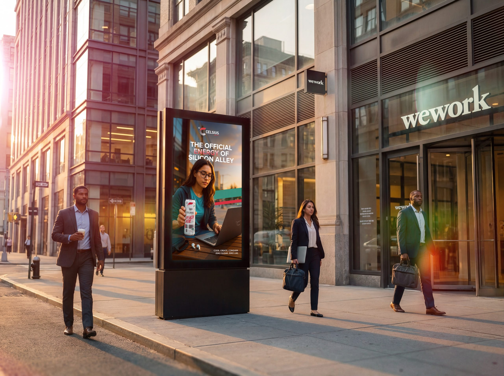
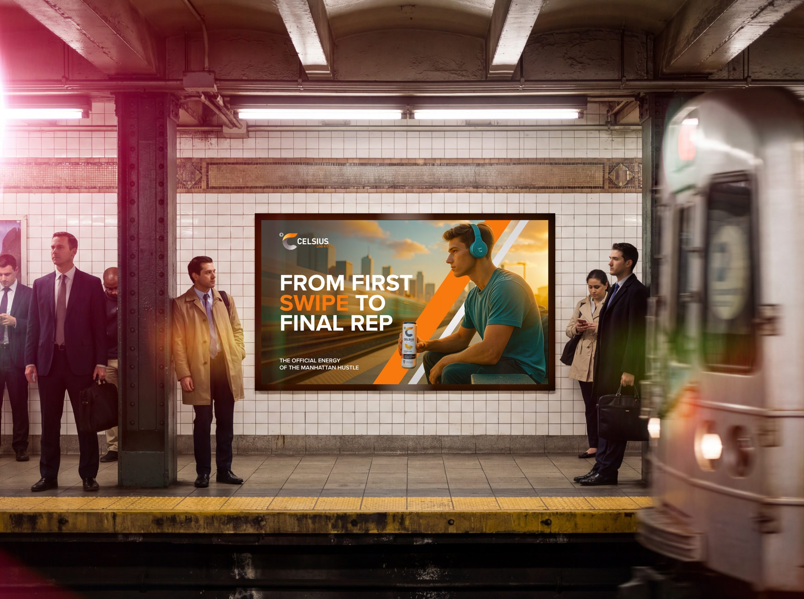
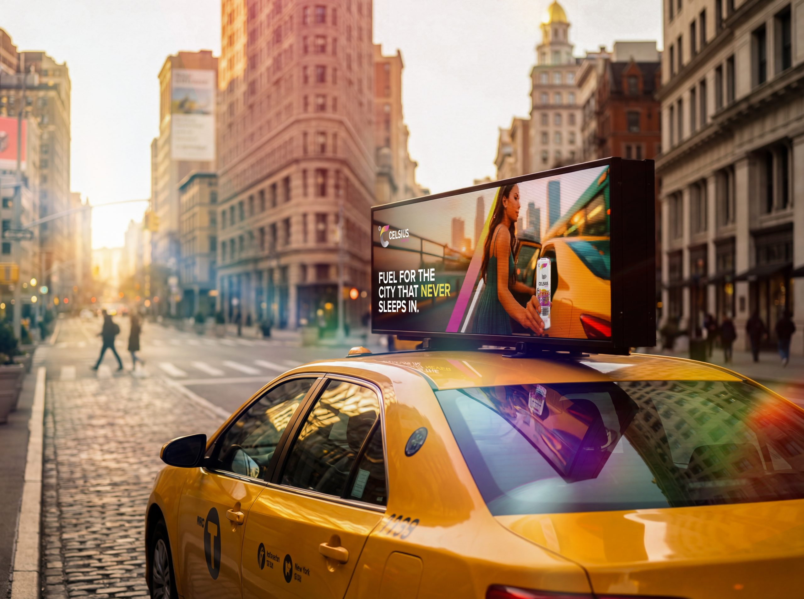
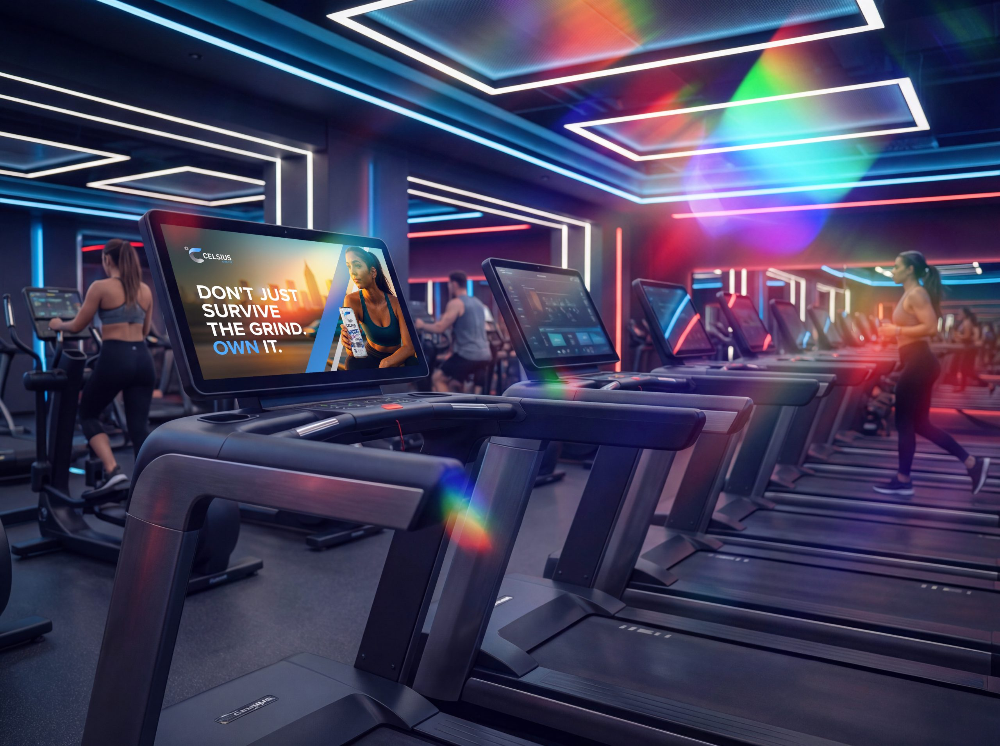

Work / 2026
Celsius
Functional Disruptive Essential Energy
Celsius wanted to move from niche performance drink to essential all-day energy partner for Manhattan's most ambitious professionals. I created a hyper-contextual digital out-of-home campaign engineered for the city's highest-traffic environments: subways, kiosks, gyms and corporate lobbies.

Sponsoring the day
I translated the 'Sponsor the Day' platform into a hyperlocal campaign tuned to the rhythm of New York. Two core personas, the Apex Achiever and the Agile Innovator, anchored messaging to the daily journey from commute to boardroom to evening workout. Cultural cues like 'First Swipe', 'Silicon Alley' and '9 AM Meeting' positioned Celsius as the official energy of Manhattan ambition.

Hooks built for a glance
I wrote and designed a suite of performance-driven headlines made for fast cognitive processing in loud environments, lines like 'From First Swipe to Final Rep.' and 'Your 9 AM Meeting's Secret Weapon.' Each execution lands instantly while reinforcing the brand's pillars of sustained brilliance and clean energy.
Placement as strategy
The campaign deployed across subway corridors, corporate lobby kiosks, gym screens and street-level panels in Chelsea, Flatiron and the Financial District, meeting the audience at the pivotal moments of their day. The system extended into hero film concepts, paid social, influencer partnerships and experiential 'Recharge Stations' on morning commutes.


estimated impressions across subway, street-level and gym placements during launch
increase in brand recall among target Manhattan professionals post-campaign